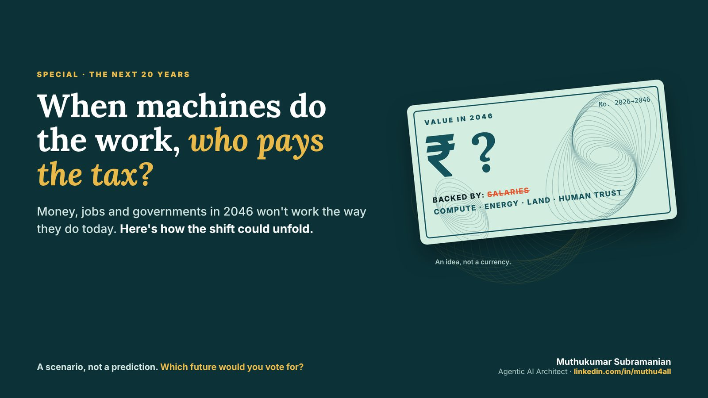

When Machines Do the Work, Who Pays the Tax? Money, Jobs and Governments in the Next 20 Years
By Muthukumar Subramanian · Agentic AI Architect

Bill Gates is warning that the next 20 years will bring some of the biggest job challenges we've ever seen. Office work like customer support and accounting will be done cheaply by AI, and humanoid robots will take on farming, construction and even surgery.
Most people read that and ask: "Will AI take my job?"
I think that's the wrong question.
The bigger question is this: when most of the work is done by machines, how does anyone get paid, and how does the government get paid?
Because almost everything we take for granted (roads, hospitals, schools, pensions, subsidies) runs on one simple loop. And that loop was designed for a world where people do the work.
The loop every government runs on
People work. They earn salaries. They pay income tax, and they spend, which generates GST. The government collects that money and spends it on services and welfare. People stay healthy and educated, and they work again.
Now remove the salary.
If machines do the work, the profits go to whoever owns the machines. Income tax shrinks. Spending falls, so GST falls too. And at the same moment, more people need support. Revenue goes down exactly when demand goes up.
This isn't science fiction. In his August 2026 essay, Gates pointed out that today's tax system actually nudges companies towards machines: you pay payroll taxes on people, but a robot is just a deductible business expense.
👉 [IMAGE: S-2-in-article-broken-loop.png]
Caption: Today the loop closes. If machines do the work, it breaks.
So what happens over the next 20 years?
Nobody knows exactly, and anyone who says they do is selling something. But here's one plausible path, in three phases.
Phase 1 · 2026–2030: Assisted
AI becomes everyone's copilot. Productivity jumps, but companies hire fewer freshers. Money is still mostly earned through salaries. Governments start noticing small cracks in the tax base, and the first serious debates on taxing AI begin.
Phase 2 · 2030–2036: The crunch
Routine office work (support, accounting, processing) gets largely automated. Robots move into warehouses, farms and construction. Services get cheaper, while land, energy and compute get more expensive. This is the dangerous decade: tax revenue shrinks while welfare needs grow. Expect experiments such as AI and robot taxes, compute levies and basic income pilots, and expect a lot of political noise.
Phase 3 · 2036–2046: Redesign
Societies are forced to write a new social contract. Work becomes more about judgement, care, craft and ownership. And the meaning of money itself changes.
👉 [IMAGE: S-3-in-article-three-phases.png]
Caption: One possible path. A scenario to think with, not a forecast.
What happens to money?
Money won't become meaningless. It will move to whatever stays scarce.
When AI and robots make services and goods cheap, money flows to the things machines can't multiply:
→ Energy: every AI system runs on electricity
→ Compute: chips and data centres become the new oil fields
→ Land: there's still only so much of it
→ Human time, trust and care: a human teacher, doctor or craftsperson becomes a premium
The countries and companies that control energy and compute will hold the kind of power oil-rich nations held in the last century. That's why the global race for chips and power plants is already so intense.
How could governments run?
If salaries can't carry the tax load, something else has to. These are the main ideas being debated today, and each has serious supporters and serious critics:
A. Tax the machines. Gates's proposal: tax AI usage and robots, and use the money for retraining and safety nets. Critics, including former US Treasury Secretary Larry Summers, have called it "protectionism against progress".
B. Tax ownership instead of salaries. Shift the tax base to profits, capital and land, where the value is going.
C. An AI dividend. A public fund that owns a share of AI and compute and pays every citizen, as Alaska does with oil and Norway does with its sovereign fund.
D. Universal basic services. Instead of cash, guarantee healthcare, education, transport and connectivity for everyone.
E. Public compute as infrastructure. India built UPI and ONDC as public rails that anyone can use. Could compute become the next piece of digital public infrastructure, so AI's gains aren't owned by a handful of data-centre owners?
Most likely, the answer is a mix.
Watch the loop break and get rebuilt
👉 [GIF: S-4-in-article-tax-loop.gif]
Caption: 2026 to 2046. The tax loop breaks, then gets rebuilt with new sources of revenue.
What does this mean for us?
The hardest part may not be economic. It may be personal.
For generations, "What do you do?" has meant "What job do you have?" Our identity, our dignity and our daily structure come from work. If machines take a large share of that work, we'll need new answers: contribution, community, learning, care, ownership.
A few practical thoughts for the next decade:
→ Own a piece of the machines. In the next economy, owners will do better than earners. Even small, regular investing matters more than ever.
→ Move towards the scarce skills: judgement, trust, care and responsibility.
→ Learn to work with AI, not compete against it.
→ Pay attention to policy. The rules about who owns AI's gains will be written in the next 10 years, and they will shape our children's lives more than any technology.
The real question
AI won't decide whether the next 20 years are an age of abundance or an age of inequality. That will be decided by who owns the machines, and how their gains are shared.
That's a choice, not a prophecy, and it's being made now.
So let me ask you 👇
If you could vote today, which model would you choose: A, B, C, D or E? Or something else entirely?
Just reply with the letter. I'll share the results in a follow-up post.
And if you know someone who keeps saying "AI will just create new jobs like every other revolution", tag them. I'd love to hear their side.
A scenario to think with, not a prediction. Views are my own.
Sources:
- Fortune: Bill Gates proposes taxing AI and robots (Aug 2026)
- World Economic Forum: why taxing robots won't work (Varoufakis)